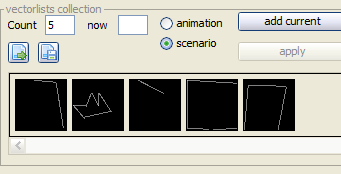
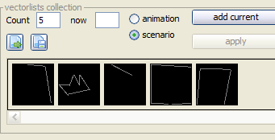

vecci window
Vecci is one of the few entities in VIDE which is not based on software of other programmers, so if you are not content with what you find here - all blame belongs to Malban alone!
Anyway... vecci is is the part of VIDE that concerns itself with vector drawing, vector lists and other display stuff. There are many functions hidden under the complicated seeming gui. But I promise you, once you programmed vecci, you know it by heart and can do wonderfull things with it!
Contents
Basic usage
Window entities in short
Drawing vectors
Additional navigation
Build animation
Shortcuts
Animations / Scenario
Vecci format (Save/Load)
Other stuff
Import
Export
Storyboard
Storyboard 2
vecci window
Using vecci you will notice different colorings in the vector display areas:
black
the background is always black
darkgray
the grid (if enabled) is always dark gray
different shades of gray
are vectors with different intensities
blue surrounding
are selected entities
light purple
are highlighted entities
purple vectors
are vectors which have "joined" ends at both sides
red little squares
are the endpoints of vectors
pink little squares
are "joined" endpoints of vectors
dark blue vectors
are "move" vectors (pattern 0) which are made (optionally) visible
dots/patterns
are patterned vectors (these do not fit 100% to vectrex patterns!)
orange
the ruler/crosshair is orange
green
the ruler/crosshair is green while a mouse button is pressed
dark green alpha values
is the rectangle that can be build by dragging the mouse on the editor
bright red
selected entities in the "DISPLAY" panel
bright yellow
highlight entities in the "DISPLAY" panel
With vecci you can handle two different entities.
Vectorlists
Animations/Scenarios
Vectorlists are vectrex basic vector lists. They come in different flavors, just as there are different BIOS routines in the vectrex BIOS. In general following permutations are possible:
relative vector information
non relative vector information
intensity settings
pattern settings
continueous drawing <-> position dependend drawing
with "move" or without "move" (could be a subset of pattern)
Not all of these cases are implemented as exports as of now, but all of these factors can be edited and persisted by vecci.
The main "list" of vectors is displayed in the first tab named "Vector List" on the left side of the window.
Animations is what I call a collection of vectorlists which have a common "interest" this might be a rotation, a movement or a "real" animation.
An animation consists of an arbitrary number of vectorlists. As of now these can be saved/loaded in vecci format (and exported). Custom routines to use animations are as example provided...
Note!
The DISPLAY panel can be switched from "vectorlist" display to "animation/scenario" display using the "play" button!
the "black" panels are vector displays or editors
editing can only be done in the upper half of vecci, in the vector editor panel(s) or in the vector table
in the middle you have a vector DISPLAY panel, and several tabs/buttons with which you can change modes or build/transform vectorlists
in the lower section of the window you have the animation/scencario settings and functions
There are a number of "black" panels you see in the vecci window. These in general display vectors. The three largest (all in the upper half of the window (two are "hidden" on the tab "Y/Z") ) are "editor" panels. Here you can actually draw, select, delete and move vectors. The three largest also fathom a "grid". The grid can be toggled on/off with the small checkbox "grid" on the left of the window. You can also select the width of the grid. If the grid is enabled, vectors are placed on the current grid spacing!
The middle "smaller" vector display window is only a "DISPLAY", here you can see the current vectorlist:
as a 3d setting
as an animation
as a scenario
depending on your current settings.
There are two sliders which you can see when you open vecci, both are used to change the scale of the nearby vector displays. If you center the sliders the scale value is one and you see approximatly a display with coordinates ranging from -150 to +150. You will probably also see a light blue border. This border I call "byteFrame" it can be switched on and off using the "byteFrame" checkbox in the upper left of the window. The byteFrame is drawn around the coordinates -128 to +127, this is the largest/smallest possible value a vector for vectrex should have, since it is a 8bit-machine and the values are signed.
Right of the main vector editor panel you can see a table, this table holds (in vecci format) all vector information of the currently edited vectorlist. The relevant fields (coordinates, pattern, intensity) can be edited. Below the table are several buttons, with these you can persist or load single vectorlists.
 load vectorlist
load vectorlist
Load a vectorlist from a XML-file, the current is overwritten.
 save vectorlist
save vectorlist
Save the current vectorlist to a XML-file.
 undo
undo
 redo
redo
 copy selected vectors
copy selected vectors
Put the current selected vectors in a buffer (this is no clipboard buffer, but can be accessed from all vecci-panels)
 paste buffer
paste buffer
Paste the current buffer into the current vectorlist.
 cut selected vectors
cut selected vectors
The current selected vectors are deleted, but also placed in the buffer
 insert vectorlist file
insert vectorlist file
Insert another XML-file into the current vectorlist.
 save selection as XML-file
save selection as XML-file
Save the current selected vectors as a XML-file.
 new
new
Clear vectorlist.
expanding/shrinking
With the  and
and  buttons you can enlarge or shrink the vectorlist according to the factor given by the nearby textfield. (shrinking uses 1/value of textfield as factor)
buttons you can enlarge or shrink the vectorlist according to the factor given by the nearby textfield. (shrinking uses 1/value of textfield as factor)
Since the value is a FACTOR you can not expand points!
If in the "select vector" mode (see below), you can also select vectors by selecting the rows in the table, if you want to move them, remember to press shift while draging!
The table also shows the selection you make by selecting vectors in the edit panel.
Start- and end- points selections are also shown in the table.
The above table is part of a tabbed pane surrounding it. The other tabs are:
Y/Z
If you want to edit 3d vectorlists, here are the other two visual displays. The "normal" display I call "Front", the second I call "Top" and the third "Sideways". All three displays are orthogonal displays. To view the actual 3d structure you have to look at the DISPLAY vector display.
3d axis settings
Usually the DISPLAY display is the same as the "Front" display, but using this tab you can change the angle (camera position), the location and the axis of the DISPLAY.
import and export
See extra pages for these...
vectorlist status

information
On this tab you can see diverse information about the current edited vectorlist. The information you can find here gives you clues in what way you can export the current list or what is right/wrong with it in its current state. The checkboxes on this page are only means to display the current status, checking/unchecking them manually does not result in any changes! Following information is provided:
all vectors same intensity
only information, no relevance otherwise
all vectors same pattern
some save formats will be disabled, since these have no means to convey pattern information
all pattern high bit set
are all patterns > 128 some vectorlist formats require that!
2d only
all z coordinates must be 0, only information, no relevance otherwise
vectors in one path
are all vectors (except start and end) connected? (determined by different method -> start, end point)
vectors continuous
are all vectors (except start and end) connected? (determined by different method -> relative)
closed polygon
same as the last two, but including start/end vectors
ordered closed polygon
as above but the vectors must also be ordered correctly
also displayed are the min/max coordinates of vectors and the maximal length found (which will be red if larger than 127)
There are as of yet three different modes, vecci can be set to. Depending on the mode settings you can do different things. The modes can be changed by a setting nearly in the middle of the window. In a tabbed pane with the heading "Mode/Select":

Mode
The "Set" mode, does what it is named after - it sets vectors. The other modes are "edit" modes.
Vecci starts of in Mode "Set".
Quick switch!
While the mouse is over the vectorlist edit panel, you can use the middle mouse button to switch thru the three available modes! The selected mode is also displayed in blue letters.
In the "set" mode, you can actually draw vectors. Left click on the "black" panel on the upper right, dragging the mouse and releasing the button draws one single vector. Right click after you have drawn your first vector will create a new vector from the last "end" position to the current click position.
The draw mode can have two additional "features" which can be turned on/off with the checkboxes directly to the left of the "Set" button.
continue
This option if enabled "continues" drawing directly to the next position. The resulting "multiple" vectors are connected (you can unconnect them later if needed - as you can also connect previously unconnected vectors later)
points ok
This option allows you to set points, vectors with a length of 0, don't know if one ever needs it, but here you go as an option.
Setting vectors is straight forward and thats all you can do in this mode!
In this mode you can select and move single points of vectors.
If you move the mouse over the vector panel, the point under the mouse is highlighted. With a click on the left mouse button you select the point (blue surrounding). You can "drag" a point with the mouse button.
If you shift/click you can select more than one point - draging, drags "all" selected points.
I you click on an "empty" spot (no highlighted point), you can drag a "rectangle" and capture points with it (select points). Shift/draging allows again to drag all of them.
To "unselect" a single point, keep shift pressed and click the point you want to remove with the middle mouse button.
Right click on a point gives you (depending on current circumstances) more options, a popup menu will be displayed.
For example, if you drag two points over each other AND have "continue" enabled, you can join vectors at these points.
In this mode you can select and move vectors.
The settings are nearly identical to the "point" section...
If you move the mouse over the vector panel, the vector under the mouse is highlighted. With a click on the left mouse button you select the vector (blue surrounding). You can "drag" a vector with the mouse button.
If you shift/click you can select more than one vector - draging, drags "all" selected vectors.
I you click on an "empty" spot (no highlighted vector), you can drag a "rectangle" and capture vectors with it (select vectors). Shift/draging allows again to drag all of them.
To "unselect" a single vector, keep shift pressed and click the vector you want to remove with the middle mouse button.
Right click on a vector gives you (depending on current circumstances) more options, a popup menu will be displayed.
Note:
The copy and paste functions do only work with vectors. That also means, that these functions only work, if the mode is set to "select vector"
Always
Set as Start
Sets the current highlighted point as startpoint of the vectorlist. The vectorlist might be reordered in order to set the point.
Without continue:
-----------------
2 points selected:
"join selected (here)"
moves both points to the highlighted location they are not JOINED, only brought to the same location!
"connect selected"
builds a new vector between the two selected points
"Rip joined vectors"
rips two (truly) joined vectors
With continue:
--------------
x Points selected
"join here"
Joins all points at the current location and truly joins them!
NOTE
Joining more than two vectors in one point is usualy a bad idea and might lead to unexpected results, when using some other "shortcuts" within vecci
2 Points selected
"connect selected"
builds a new vector between the two selected points and joins both ends of the new vector to their endpoints
"join selected (here)"
moves both points to the highlighted location and truly JOINS them
"Rips joined vectors"
rips two (truly) joined vectors
Here you only have selections:
delete selected
delete the current selected vector(s)
delete not selected
delete all currently not selected vectors
insert point
in the current selected insert a point in the middle (splits the vector in 2 halfs)
switch orientation
changes the "direction" of a vector -> swaps start and end vertex

switch orientation example
remove middle point
only if you have two directly connected vectors selected - removes the middle point (opposite to "insert point")

remove point example
On the same Tab as the mode selects there are also some additional options available:
arrows
Draw vectors as arrows, shows simply the direction of a vector.
position
Draw a number on each vector which shows the ordering position in the vectorlist.
moves visible
If checked move vectors (pattern = 0) are displayed using a dark blue color.
In the main view there is a button "pad" with which you can "scroll" the viewport in all directions (scrollstep width is the width of the current used grid) [double click the center -> centers the viewport]
You can also "drag" the viewport by using the mouse. While keeping the CTRL key pressed you can drag the viewport location.
The button  below the mentioned button "pad" opens a large (resizable) editor window (the window is completely synchronized with vecci).
below the mentioned button "pad" opens a large (resizable) editor window (the window is completely synchronized with vecci).
The button  below the mentioned button "pad" opens a large (resizable) 3d-editor window.
below the mentioned button "pad" opens a large (resizable) 3d-editor window.
Here you can:
not add vectors, only move and work with vectors
CTRL mouse moves the viewport
scaling is possible
sliders for all 3 axis (independend of other views)
checkboxes for "grid" for each axis
checkbox for "move allowed" for each axis
axis can be shown or hidden (independend of other views)
byte "cube" (frame) can be shown/hidden
The advantage of this window is that you can chose a "perspective" view of a 3d-vectorlist and edit directly. The window is completely synchronized with vecci and any other editing "instance".

3d editor
Under this tab there are a few functions to build animations or scenarios from the current vectorlist.

Rotation example
Rotations can be calculated by vecci, you can chose the axis (1 or more axis) the maximal angle and the number of steps you would like to rotate.
If you use "large" coordinates in your vectorlists, the rotation list values can be higher than the byte range vectrex allows, to prevent this you can chose the extra option "scale to byte", this ensures that the resulting list still "fits".
A built "animation" of a rotation always has 3 parts:
the origin
the final result
the steps in between
The "steps" counter where you can enter the "steps" represents c). 0 (zero) can be used!
is always the original vectorlist
is always the given "max angle" applied to the vectorlist
are all steps in between
If you check the "+/-" checkbox behind the angle the rotation will be clockwise, if you leave it unchecked, the rotation will be anti-clockwise.

Rotation example
You can also "morph" from one vectorlist to another. The two first vectorlists in the current animation (see below) are used as input. You can chose the number of steps you wish to use.
In order for the morphing to work correctly the vectorlists have to "good".

Morph example
As of now only one function ist provided:
seperate paths as scenario entries:
Using this button you can split the current vectorlist in seperate vectorlists. For each "connected path" in the vectorlist one scenario entry is generated. The opposite function is the "join" function in the animation/scenario section.
Example:
 <-> 
<-> 

shortcuts
There are a couple of "helper" functions provided, these function on complete vectorlists (not animations(yet) ).
center vectorlist
Well - centers the current vectorlist
connect when possible
If vectors in the list have the same start/end coordinates, this functions "joins" these vectors.
order vectorlist
This function orders the vectors to the best of vides automation abilities, this means there are several steps taken:
first it is insured that all "joined" vectors are joined to their "correct" ends, meaning startpoints are joined to endpoints vice/versa, if this is done, usualy one of the vectors changes its orientation
all joined vectors are ordered in their "natural" join order
all other vectors are ordered in their natural order
the "order" parameter of vectors is set accordingly
Example:
 <->
<-> 
split where needed
Tests all vector lengths, if a vector is longer in any dimension than 127 "pixels" the vector is splitted in half. After processing there is no single vector that is "longer" than 127.
fill gaps (with move vectors)
This ensures all points are connected (but no circular connection is formed, meaning start and end points are not connected). "Ordering" is invoked upon start, apart from reordering no vectors are changed, new vectors are inserted, where gaps were found. The new vectors are always "moves" (pattern = 0), new vectors are always smaller than 128.
 <->
<-> 
remove dots
Removes "vectors" where the start vertex and the end vertex denote the same coordinates.
You can also chose to do that only in respect to x/y axis.
fit byte
enlarges/shrinks the current vectorlists to optimally fit into the byte range
Note!
There are "strange" cases of vectorlists, when above implemented shortcuts may not lead to optimal results. One simple case is a construct like:

Here you see a start vector going off in one direction and the start location is JOINED with two other vectors (a three-way join) which forms a closed polygon.
This and similar constructs are not easy to analyse and handle correctly. I have not even tried very hard - if you have vectorlists like that, please optimize them by hand!
The second tab of shortcuts was introduced to automatically improve "large" vectorlists - mainly used for animation and storyboard purposes.
For "small" animations used as "sprites" in a game, these routines are "overkill" and might even be totally inappropriate, since the "structure" of the list will most likely be changed.
Due to the nature of the routines and depending on the available computing power/RAM. The routines may take some time to finish.
Please save the current work beforehand, the only way to "break" the current computation is to shutdown Vide.
The routines work best when combined. A good result can usually be achieved by pressing "Isidro All". That button executes the single functions:
disconnect all
remove move vectors
remove idouble vectors
remove dots
connect longest paths ++ (without respect zero)
But - possibly this is not the best result to achieve. Each vectorlist needs to be optimized (!) in different ways.
disconnect all
Removes all relations between vectors. Each vector is a single "instance" and does not (vecci internally) share any vertice with another vector.
For the other routines on this tab to work as expected and to leave all automated optimization possibilities open - this is always the first step (most of the following buttons inherently call a disconnect all inherenly).
remove move vectors
All invisible (move vectors) [vectors with pattern = 0] are removed.
remove double vectors
All vectors with the same start and end point are removed.
remove idouble vectors
All vectors with the same start and end point are removed.
Also all vectors which are "inverse" are removed, "start = end" and "end = start".
optimize size
The relation of vector scale and vector strength is optimized. While in theory this sounds good - and often is - sometimes this is a pessimization.
The reason is, that in large vector drawings using the synced vector draw format the "syncing" also uses vectors (move vectors to be precise) to "return" to the sync point.
Optimized large vectorlists can often have sync points "far away" from point zero, so the sync return might be realized using quite a few move vectors. You have to test each vectorlist - if this optimization is realy suitable!
All these sync move vectors can not be taken into account within this calculation, since the optimization does not know in what format the final drawing on a vectrex will be done. Those move vectors can totally be counter productive and result in an overall worse result!
connect longest paths
This routines rekursively searches the complete vectorlist for the longest possible path vectors can be drawn in one go - and connects those vectors.
The result is a vectorlist with several relative vector paths.
[The result still might not be the optimal connection, since the longest path that is found first, might hinder possibly several shorter paths which in turn would result in an over all better connection count]
connect longest paths ++
This is the same as "connect longest paths", in addition the found paths are connected (with move vectors) (in the shortes possible way). The result is a vectorlist which can be drawn in one go (with move vectors in between).
Here you also can switch on the option "respect zero". If that option is switched on - it is checked whether the needed move vector between to paths is larger than the move needed from the zero location. If the move is larger - NO move vector is generated (and thus a "sync" point is forced). In this case the resulting vectorlist can not be drawn in one go.
(for a picture look at "Rotation")
Animations/Scenarios are both a collection of different vectorlists. I differ the two entities because one displays all vectorslists at the same time (scenario) the other plays each vectorlist after another (with a delay) to create the illusion of an animation.
The datastructure and the handling in vecci are identical!
In short what you can see/do:
load animation
Load an animaton from a XML-file, the current is overwritten.
save animation
Save the current animation to a XML-file.
"add current"
adds the current edited vectorlist (a clone actually) to the current animation
"apply"
if you edit the "current" animation frame (which is a clone of the frame!) you can use the apply button to actually apply the changes to the animation
"add view"
adds the current "DISPLAY" of the current edited vectorlist to the animation. If you e.g. translocated of rotated the camera (see TAB "3d axis settings") the DISPLAY differes from the current vectorlist in the editor. With this button you can "use" the DISPLAY.
"revers"
reverses all animation frames
"<-" and "->"
sets the next animation frame as the current edited (clone!) vectorlist.
SHIFT clicking the buttons MOVES one animation frame in the corresponding direction!
"delete"
delete one animation frame (the current selected)
"clear"
completely clears the current animation
"join"
This joins all vectorlist entries in the current animation/scenario into one single vectorlist
The vecci save format is a straight forward XML-File with all data in appropriate sub structures.
a VectorAnimation consists of n XML-structures of the type GFXVectorList
a GFXVectorList consists of n XML-structures of the type GFXVector
a GFXVector consists of 2 XML-structures of the type Vertex (start and end) and several atomic entities (int, double, string)
all Vertexes (even joined and supposedly relative vectors) are stored with ABSOLUT positioning information.
in a vectorlist "connected" vectorlist are connected via a unique ID of vectors, the unique ID is only guranteed to be unique in ONE saved XML file (be it GFXVectorList or VectorAnimation)
If need should arise I can also provide a "JSON" format.

line
Per default line "settings" are off. With the checkboxes visible above you can switch line settings on. Two options are available:
pattern
Here you can set a pattern byte for the vectors to be used. The actual pattern is a the binary representation of the entered byte (you can enter either hex or dec numbers).
The default pattern for lines is "255" which is a complete line.
intensity
The default intensity is 63, which is half of the available max intensity of 127 (negative values - values higher than 127 - result in non visible lines on a real vectrex)
Note:
Within vecci "moves" are represented with a pattern of 0 (zero). Vectors with an intensity of 0 (zero) are still not visible, but are not considered "move" vectors by vecci.
The above settings are (if switched on) always used for the next drawn vectors. If you want to change already defined vectors you can do so too.
Select (multi select is supported) the vectors you want to apply the new settings to, and press "set to selected" than the given values are applied.

2d-Tools
The tools under this tab are all applied directly to the currently edited vectorlist. The first three are "shortcuts" to processings which can be acchieved by other means in vecci, but are a bit "cumbersume" (one has to generate rotation animations an extract single lists from those)
The button "image to vector" is explained in its own "Vector image" section.
Ignore these for now...

Faces
Vecci is capable of doing a HLR (Hidden line removal) from the display of 3d-"figures". In order to do HLR following steps have to be considered:
the result of a HLR is a two dimensional vector list, which usually is unordered, not a polygon and not continous, so the export possibilities are somewhat restrained
a HLR only makes sense on a 3d "object"
to hide anything, there must be something where it can be hidden BEHIND, behind a line or a linesegment nothing can be hidden. Therefor the "objects" must have "faces" which represents a surface, plane, region, zone or whatever you want to call it
under the tab "faces" you can define, delete and see all faces that are currently defined
the only way to define a face (apart from loading a file) is to select "points" in your vectorlist and press "add selected as face"
the selected points must all lie within one plane (coplanar), otherwise they will not be accepted as a face
the selected points must be sufficient to define a plane (at least three points which are not colinear), otherwise they will not be accepted as a face
in order to define faces you must be in mode "POINT" (otherwise you can not select points)
you can select points either in the vector editing "grids" or in the table. Clicking in the table on one of the columns that displays a point - selects that point
multiple selection (as always) is possible holding SHIFT (also in table)
deselecting a point is also possible using the middle mouse button (on multi selection remember to keep shift pressed) (also in table)
Note: The table (due to using shift and the resulting multi selects in the table) does not display the selection corretly. Look at the editor grids to see which points are actually currently selected
Moving points of a face can "destroy" the face. A face gets deleted automatically from the face list, when its points are no longer coplanar.
The HLR is executed with the 3d-settings which result in the DISPLAY image (that enables the user to chose the point of view to on the figure - see tab 3d-settings).
The result of the HLR is added to the animation/scenario list.